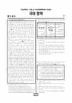

문제지

전국연합학력평가 · 시·도교육청 주관
2022년 11월 고1 학력평가 국어 1등급컷은 원점수 88점(추정), 표준점수 최고점은 145점입니다.
원점수 1등급컷은 공식 발표값이 아니라 EBSi·입시기관 값입니다. 등급별 값은 등급컷 표, 출처 구분은 데이터 원칙에 있습니다.

시험지를 먼저 풀어 보세요. 등급컷·표준점수·난이도는 흐리게 가려 뒀어요.
| 등급 | 원점수 | 표준점수 | 백분위 | 누적 |
|---|---|---|---|---|
| 1 | 88 | 134 | 96 | 4.43% |
| 2 | 80 | 126 | 89 | 11.07% |
| 3 | 70 | 117 | 77 | 23.26% |
| 4 | 59 | 107 | 61 | 40.24% |
| 5 | 45 | 94 | 40 | 61.83% |
| 6 | 33 | 82 | 23 | 77.77% |
| 7 | 23 | 73 | 11 | 89.93% |
| 8 | 17 | 67 | 4 | 96.77% |
등급별 컷 · 입시기관 3곳 원점수 추정 종합(EBSi·메가스터디·종로학원) · 만점 100점
| 등급 | 표준점수 이상 | 인원(명) | 비율 |
|---|---|---|---|
| 1 | 134 | 14,761 | 4.43039% |
| 2 | 126 | 22,120 | 6.63913% |
| 3 | 117 | 40,628 | 12.1942% |
| 4 | 107 | 56,573 | 16.9799% |
| 5 | 94 | 71,922 | 21.5868% |
| 6 | 82 | 53,105 | 15.939% |
| 7 | 73 | 40,512 | 12.1593% |
| 8 | 67 | 22,804 | 6.84443% |
| 9 | 51 | 10,751 | 3.22682% |
시·도교육청 공개 자료
출처: 시·도교육청이 공개한 전국연합학력평가 성적 분석·통계자료(공개 자료 보기).
EBSi 응답자 기준으로 가장 많이 틀린 문항은 2번(2점)이고, 오답률은 76%입니다. 상위 15문항 중 1문항은 정답보다 한 오답을 고른 사람이 더 많았습니다(2번: 정답 ④ 24%, ③ 30.3%). 오답률 50%를 넘은 문항은 8개입니다.
| 순위 | 문항 | 배점 | 오답률 | 정답 | 많이 고른 오답 |
|---|---|---|---|---|---|
| 1 | 2번 | 2점 | 76% | ④ | ③ 30.3% |
| 2 | 34번 | 2점 | 64.2% | ① | ⑤ 24.4% |
| 3 | 41번 | 2점 | 59.7% | ⑤ | ③ 31.7% |
| 4 | 26번 | 2점 | 57.3% | ① | ③ 18% |
| 5 | 28번 | 3점 | 57.2% | ④ | ② 19.5% |
| 6 | 20번 | 3점 | 55.8% | ④ | ③ 19.2% |
| 7 | 43번 | 2점 | 52.2% | ⑤ | ④ 21.6% |
| 8 | 38번 | 2점 | 51.2% | ② | ④ 29.4% |
| 9 | 42번 | 2점 | 49.4% | ⑤ | ③ 19.2% |
| 10 | 27번 | 2점 | 48.8% | ④ | ③ 18.1% |
| 11 | 45번 | 3점 | 48.2% | ② | ③ 15.6% |
| 12 | 40번 | 3점 | 46.8% | ② | ④ 15% |
| 13 | 37번 | 3점 | 42.8% | ③ | ④ 15.1% |
| 14 | 36번 | 2점 | 41.6% | ④ | ③ 15.3% |
| 15 | 44번 | 2점 | 37.7% | ④ | ③ 13.1% |
EBSi 가채점 응답자 기준 · 전 문항 중 오답률 상위 15문항
출처: EBSi 역대 등급컷·오답률 공개 화면. 가채점에 참여한 EBSi 이용자 응답이라 전체 응시자 정답률과는 다를 수 있습니다.
발행 기관: 시·도교육청(전국연합학력평가). 파일 위치: 이 사이트가 보관한 사본. 저작권은 발행 기관에 있습니다. 원본과 다르거나 게시 중단이 필요하면 연락처로 알려 주세요. 등급컷 출처 구분은 데이터 원칙에서 설명합니다.
막대 색은 역대 대비 난이도 · 진한 막대가 이 시험 · 막대를 누르면 그 회차로 이동
| 회차 | 1등급컷 | 표점 최고 | 1등급 표점 | 난이도 |
|---|---|---|---|---|
| 11월 학평2022년 고1이 시험 | 88 | 145 | 134 | 보통 |
| 9월 학평2022년 고1 | 82 | 155 | 136 | 매우 어려움 |
| 6월 학평2022년 고1 | 91 | 142 | 134 | 쉬움 |
| 3월 학평2022년 고1 | 76 | 164 | 136 | 매우 어려움 |
| 11월 학평2021년 고1 | 88 | 146 | 134 | 쉬움 |
| 6월 학평2021년 고1 | 92 | 140 | 133 | 매우 쉬움 |
| 3월 학평2021년 고1 | 80 | 160 | 135 | 어려움 |
국어는 교육청 채점 결과 1등급 구분 표준점수가 134점, 최고점이 145점(552명)으로 9월(1등급 136점, 최고점 155점, 47명)보다 쉬웠습니다. 응시자는 333,176명, EBSi 가채점 응답자 기준 오답률 50%를 넘은 문항은 8개였습니다.
가장 많이 틀린 2번(2점, 76.0%)은 식품 안전 연구소 연구원이 식품 포장지의 표시 정보를 설명한 강연에서 [자료 1]~[자료 3]의 활용을 묻는 문항으로, 응답의 30.3%가 같은 오답(3번)을 골랐습니다. 화법 문항이 국어 최다 오답이 된 회차입니다.
16~21번은 약소국 제나라를 부강하게 만든 관중의 국가관(가)과 『성학집요』에서 수양을 통해 인격을 완성하는 것을 군주의 자격으로 본 율곡(나)을 엮은 지문이었습니다. 25~29번은 논리식의 타당성을 결정하는 알고리즘이 있느냐는 힐베르트의 물음에 답하려고 튜링이 고안한 가상 기계를 다룬 지문으로, 길이를 무한으로 가정한 테이프 등 ㉠~㉢을 이해하는 26번(57.3%)이 어려웠습니다.
38~41번은 플랫폼 사업자가 서로 구분되는 두 이용자 집단을 연결해 가치를 만드는 양면시장 지문이었습니다. 문법은 관형어와 부사어가 실현되는 방법을 다뤘고, 「용비어천가」와 「석보상절」 예문이 나왔습니다.
문학은 김광섭 「봄」과 허형만 「겨울 들판을 거닐며」(22~24번), 몽기미에 처음 연락선이 닿은 날을 그린 송기숙 「몽기미 풍경」(30~33번), 윤이후 「일민가」와 이효석의 수필 「화춘의장」(34~37번), 계모 장씨가 혜랑·신광 법사와 꾀를 꾸미는 「화산기봉」(42~45번)이었습니다. 「일민가」와 「화춘의장」의 공통점을 고르는 34번(64.2%), <보기>와 함께 「화산기봉」을 읽은 반응의 41번(59.7%)이 어려웠습니다.
화법·작문은 식품 포장지 정보 강연(1~3번), 학교 축제 동아리 행사 안내문(4~7번), 친환경을 가장한 그린워싱을 비판하는 지역 신문 기고(8~10번)였습니다.